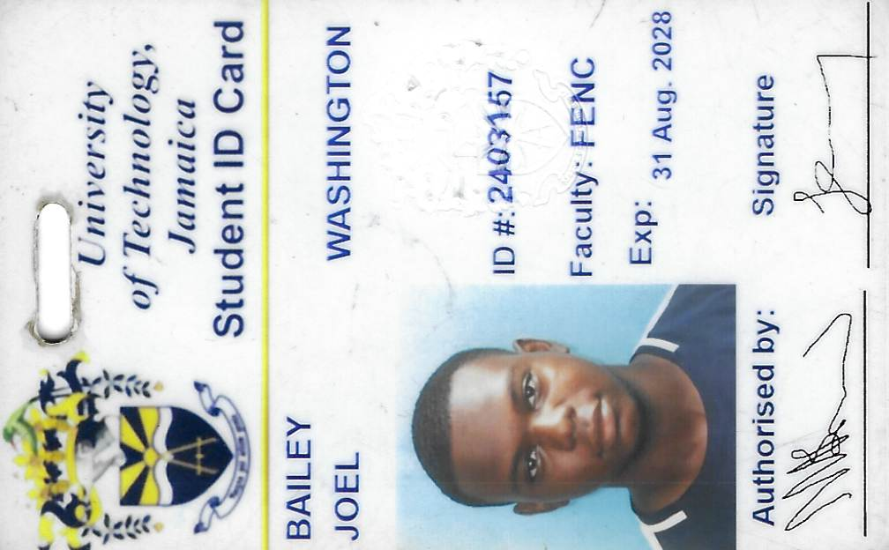

Professional Profile
My Curriculum Vitae & CIT2011 Project Portfolio
Quick Links
↑ Back to TopStudent ID

My Curriculum Vitae & CIT2011 Project Portfolio

Prepared following the Harvard College guide to creating a strong resume (action verbs, quantified results, reverse-chronological order, no personal pronouns).
Melbrook Heights, Harbour View, Kingston 17, Jamaica
+1 (876) 771-2418 | joel.bailey504@gmail.com
University of Technology, Jamaica
2024 – Present
Bachelor of Science in Computing
Camperdown High School 2017 – 2024
Windward Road Primary School 2011 – 2017
Caribbean Advanced Proficiency Examination (CAPE)
Caribbean Secondary Education Certificate (CSEC)
City & Guilds
Junior ICT Analyst
[Dates]
PACKAL – Norman Manley International Airport
Stock Counter
[Dates]
Jamaica Energy Partners – West Kingston Power Plant
Enterprise Network & Access Control System
Networking: TCP/IP, DNS, DHCP, switches, routers, network fundamentals, enterprise networking
Systems Administration: Active Directory, user account management, identity administration, Windows operating systems
Hardware & Support: Hardware troubleshooting, repair, diagnostics, software installation, configuration, and technical support
Security Systems: CCTV installation, configuration, and maintenance; access control installation and administration
Software: Microsoft Word, Excel, PowerPoint, Outlook
Audio-Visual Team Member
COFB Grace Gospel Hall, St. Thomas Main Road, Harbour View
Outreach Program Participant
COFB Grace Gospel Hall, St. Thomas Main Road, Harbour View
Cleaning Crew Member
COFB Grace Gospel Hall, St. Thomas Main Road, Harbour View
A list of all working assignments and projects completed for CIT2011 so far.
| # | Project / Assignment | Description | Link |
|---|---|---|---|
| 1 | Personal Portfolio Home Page | Semantic HTML5 structure and internal navigation. | View |
| 2 | Professional Resume Page | CV built to Harvard resume guidelines. | View |